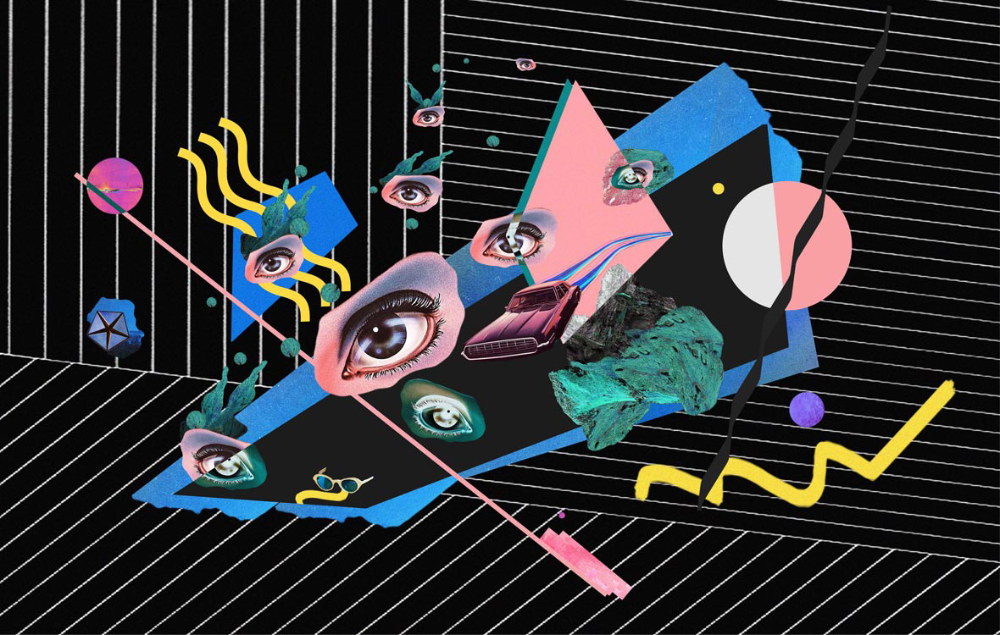
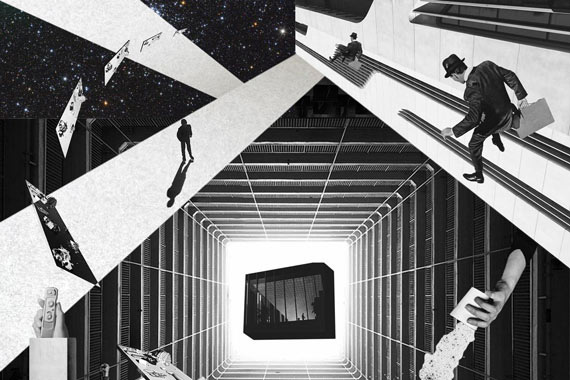
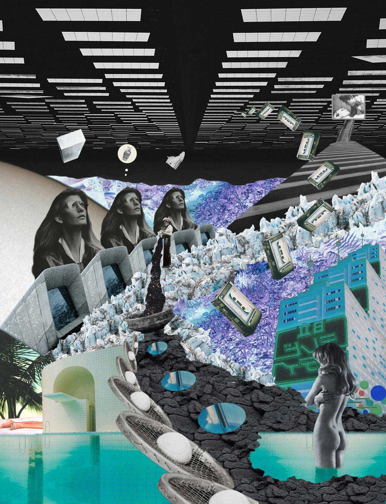
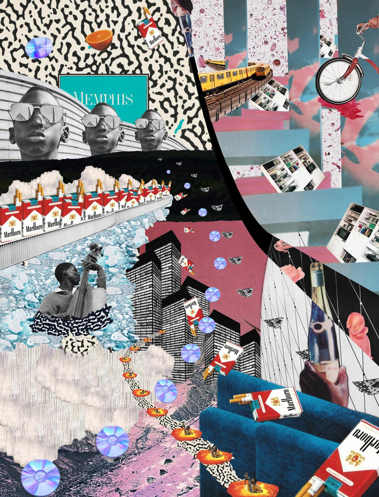

( Hint: Break through the Great Firewall by resizing this window. )
The Collage Art of He Chong




Collage art has been a long-established form of art.
It’s a versatile medium that’s unrestrained by conventional
forms of artistic expression and can be used to document time,
history, and change. Beijing based artist He Chong is one of
the few Chinese artists who work primarily in this medium.
But aside from his collage art, He Chong is also an avid
photographer whose weapons of choice are Lomography cameras.
In a way, his style in both mediums is quite similar, psychedelic
and surreal but presented in a unique retro aesthetic.
When talking about the current state of collage art in China,
He Chong tells us: “Most of the collage works that people know
of are made by foreign artists. In China, there are only a few
artists that work in this medium, and most of them are art students
who might learn about or use collage for a class assignment.
But I feel that in both the fields of art and design, collage
is a medium that has impressive visual potential. I believe it
has a bright future.”
As a self-described reclusive artist, He Chong spends his free time
with his wife creating collages, taking photographs, or walking in
the park. He’s someone who has found happiness in living a laid-back
lifestyle rather than chasing superficial pursuits. He Chong’s work
is much like his attitude towards life, relaxed and unconstrained.
The creative freedom of collage art seems to perfectly go hand in hand
with the mellow, carefree attitude that He Chong
lives by.